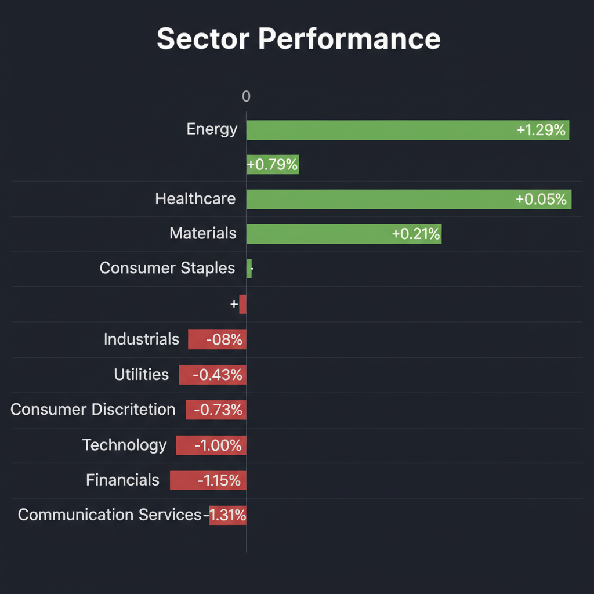
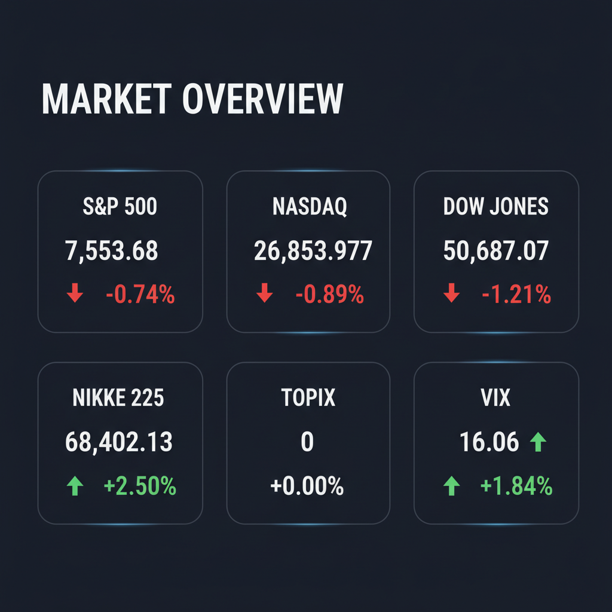

各エージェントがWeb調査結果を踏まえて独立に10段階評価した結果です。平均7以上=強気、4〜6.9=中立、4未満=弱気。
| 銘柄 | ファンダメンタルズアナリスト | テンバガーハンター | マクロエコノミスト | テクニカルストラテジスト | リスクマネージャー | 平均 | 判定 |
| 2730.T | 8 統合期待、増配、割安、下値限定 | 7 統合期待と増配で割安感増す | 8 統合期待、増配、財務健全、割安 | 7 統合期待、増配で下値堅い | 7 統合期待、増配、割安、継続買い |
7.4 | 強気 |
| 5254.T | 3 利益率急低下、過熱感、株価下落 | 8 DX成長と収益性改善期待 | 4 利益率急低下、特定顧客依存リスク | 4 利益率急低下、リスク顕在化 | 3 利益率急落、収益性不安定、高PER |
4.4 | 中立 |
| HON | 4 スピンオフ懸念、利益率低下、株価下落 | 5 スピンオフ不透明で様子見 | 4 スピンオフ不透明、直近業績悪化 | 4 スピンオフ懸念、決算も変調 | 4 スピンオフ懸念、直近減益、様子見へ |
4.2 | 中立 |
| PANW | 2 脆弱性露呈、赤字拡大、株価下落 | 4 脆弱性発覚と損失拡大で警戒 | 2 脆弱性露呈、利益質悪化、赤字拡大 | 3 脆弱性露呈、収益性悪化で警戒 | 2 脆弱性露呈、利益質悪化、高マルチプル |
2.6 | 弱気 |
| 8267.T | 2 減速、高負債、目標株価引下げ | 2 高負債と減速でリスク大 | 2 成長鈍化、高負債、アナリスト売り | 2 小売鈍化、負債懸念で警戒 | 2 小売減速、高負債、アナリスト売り転換 |
2 | 弱気 |
| RDW | 1 赤字拡大、高PER、流動性リスク | 3 赤字拡大と高PERで警戒 | 2 赤字拡大、高PER、流動性リスク | 2 赤字拡大、高バリュエーション継続 | 1 赤字拡大、高バリュエーション、流動性リスク |
1.8 | 弱気 |
| 9859.T | 1 銘柄特定不可、調査不能 | 1 該当銘柄なし、調査不能 | 1 銘柄特定不可、情報不足 | 1 情報不足、該当銘柄なし | 1 該当銘柄なし、調査不能 |
1 | 弱気 |
エージェントが推奨した中小型株について、Google検索で最新情報を調査した結果です。
PANW (パロアルトネットワークス) に関する投資判断に必要な最新情報は以下の通りです。
1. 企業概要 パロアルトネットワークスは、カリフォルニア州サンタクララに本社を置く、サイバーセキュリティのグローバルリーダーです。その事業内容は、次世代ファイアウォールを中核とし、ネットワークセキュリティ、クラウドセキュリティ、セキュリティ運用を統合したAI駆動型プラットフォームを提供しています。
2026年6月時点の時価総額は、約2274.2億ドルから2437億ドルです。 同社はサイバーセキュリティ業界においてトップのポジションを確立しており、2024年にはネットワークセキュリティ市場で28.4%の市場シェアを維持しています。 また、フォーチュン100社の85社以上を含む、150カ国以上の70,000を超える組織にサービスを提供しています。
2. 直近の業績・決算情報 2026年6月2日に発表された2026年度第3四半期（2026年4月30日終了）の決算は以下の通りです。
* 売上高: 30億ドル（前年同期比31%増）。これは市場予想を上回りました。 * 利益: * GAAPベースの営業損失: 1億8300万ドル（前年同期は2億1900万ドルの営業利益）。 * GAAPベースの純損失: 1億7700万ドル、希薄化後1株あたり(0.22)ドル。 * 非GAAPベースの営業利益: 8億1400万ドル（前年同期は6億2700万ドル）。 * 非GAAPベースの純利益: 6億8400万ドル、希薄化後1株あたり0.85ドル。アナリスト予想（0.72ドルまたは0.79ドル）を上回りました。 * 成長率: * 総売上高は前年同期比31%増。 * 次世代セキュリティ年間経常収益 (NGS ARR) は前年同期比60%増の81億ドル。 * 繰延収益 (RPO) は前年同期比36%増の184億ドル。
2026会計年度の通期見通しは引き上げられ、売上高は114.15億ドルから114.25億ドル（前年比24%増）、非GAAP希薄化後EPSは3.77ドルから3.79ドルを見込んでいます。
3. 最新ニュース・材料（直近1-2週間） * 2026年6月2日、2026年度第3四半期決算を発表しました。売上高および非GAAPベースのEPSは市場予想を上回りました。 * 2026年5月29日、AIエージェントの保護を目的としたPortkeyの買収を完了しました。 * 2026年5月12日、AIエンタープライズ向けの次世代IDセキュリティプラットフォーム「Idira」を発表しました。 * 2026年5月13日に開示されたPalo Alto Networks製ファイアウォールの認証バイパスの脆弱性（CVE-2026-0257）について、当初は中程度の深刻度とされていましたが、実環境での悪用が確認されたため、後に「クリティカル」に再評価されました。同社は直ちにパッチの適用または緩和策の実施を推奨しています。
4. アナリスト評価・目標株価 アナリスト評価は概ね「買い（Buy）」のコンセンサスです。
直近（2026年6月3日時点）では、43のアナリストによる平均目標株価は308.3ドルに引き上げられており、現在の株価から約4%の上昇余地があることを示唆しています。最高目標株価は375ドル、最低は114ドルです。 Morningstarは、適正価値を285ドルと評価しています。
5. リスク要因 * 競合: Fortinet、Cisco Systems、Check Point Software Technologies、Microsoft、CrowdStrike、SentinelOneなどの強力な競合他社が存在します。特にクラウドセキュリティではMicrosoftが、エンドポイントセキュリティではCrowdStrikeやSentinelOneが強みを持っています。 * 財務上の懸念: 2026年度第3四半期にGAAPベースで純損失を計上しており、力強い売上成長を利益に結びつける上での課題を示しています。 また、高いP/E比率（164.19倍）から過大評価の可能性や、多額の株式報酬による株主希薄化の懸念も挙げられます。 2026年5月には執行副社長が6万2000株超を売却しており、経営陣の内部的な自信の欠如を示唆する可能性もあります。 * 脆弱性: 製品の脆弱性（CVE-2026-0257）が悪用されていることが確認されており、これに対する迅速かつ効果的な対応が、企業の信頼性や顧客離れを防ぐ上で重要です。
6. 株価の最近の動き 2026年6月2日に発表された2026年度第3四半期の好決算にもかかわらず、アフターマーケット取引で株価は4.95%下落し、285.61ドルとなりました。 2026年6月3日にはさらに4.37%下落しました。 この下落は、将来のガイダンスへの懸念や、高い株式報酬、あるいはより広範な市場状況を反映している可能性があります。 直近の終値（2026年6月2日時点）は297.18ドルです。 過去1年間で見ると、サイバーセキュリティ業界全体と比較してアンダーパフォームしていますが、アナリストは依然として強気の見通しを維持しています。
HON（ハネウェル・インターナショナル）に関する投資判断に必要な最新情報は以下の通りです。
エディオン (2730.T) に関する投資判断に必要な最新情報は以下の通りです。
1. 企業概要 エディオンは国内3位の大手家電量販店で、中部・西日本を主な地盤としています。2012年に店舗名を「エディオン」に統一し、家電量販店の運営のほか、住宅リフォーム・関連事業、eコマース（エディオンネットショップ）、モバイル専門店、インターネットサービスプロバイダ事業なども手掛けています。また、プロサッカーチーム「サンフレッチェ広島」の運営も行っています。2026年3月時点でのグループ店舗数は直営453店、フランチャイズ（FC）727店です。2026年6月3日時点の時価総額は2,659億円です。
2. 直近の業績・決算情報 2026年3月期の連結業績は増収増益を達成しました。売上高は7,937億4,600万円（前期比103.3%増）、営業利益は257億8,200万円（同110.2%増）、経常利益は266億4,000万円（同109.4%増）、親会社株主に帰属する当期純利益は154億5,300万円（同109.5%増）でした。エアコンなどの季節商品、パソコン、携帯電話の販売が好調で、特にパソコンはWindows 10の買い替え特需が寄与しました。これにより、5期連続増収、3期連続増益を達成しています。2027年3月期の連結経常利益は270億円（前期比1.4%増）を見込んでいます。
3. 最新ニュース・材料 2026年6月3日、エディオンがヤマダホールディングスと経営統合に向けた協議に入ったと報じられました。共同持株会社を設立し、商品開発力と調達力を強化する方針で、統合後の売上高は約2兆5,000億円に達する見通しです。また、2026年3月期の年間配当を47円から48円へ増額し、2027年3月期も前期比2円増の50円に増配する方針を示しています。直近では、5月30日に株探がノジマのM&A加速を材料に家電業界関連株を特集し、業界テーマが株価を下支えする要因になりやすいとの見方が示されています。
4. アナリスト評価・目標株価 株予報Proによると、アナリスト予想の経常利益は270億円（増益率1.4%）です。別の情報源では、今期予想経常増益率が13.7%と同業他社を上回る水準にあるとされています。日系大手証券によるレーティングは「中立」で、目標株価は2,200円とされています。2026年5月29日時点の目標株価コンセンサスも2,200円（かい離率-7.17%）です。
5. リスク要因 主なリスク要因としては、パソコンの買い替え特需や大型イベント閉幕に伴う需要の一巡による反動減が挙げられており、販売量の減少が売上成長ペースに影響する可能性があります。また、エアコンなどの季節商品は気象条件によって売上が変動する可能性があります。家電業界は異業種からの参入が相次ぎ、競争が激化しています。財務面では、自己資本比率が54.1%と安定しており、有利子負債もおおむね減少傾向にあります。
6. 株価の最近の動き 2026年6月3日時点の終値は2,374円です。2026年5月28日から6月3日までの間、株価は2,334円から2,374円へと小幅に上昇（+1.7%）しました。5月29日には出来高が前日比+82%と増加し、上値の値固めが進む形となっています。年初来高値は2,402円（2026年5月29日）、年初来安値は2,062円（2026年4月24日）です。
ご提示いただいた銘柄コード「9859.T」について調査いたしましたが、日本の証券取引所に上場している企業としてこのコードに該当する銘柄を特定できませんでした。
検索結果には、個別指導塾TOMASの電話番号の一部として「9859」が含まれる情報や、Yahoo!ファイナンスの他の銘柄（例: セレンディップ・ホールディングス(株)【7318】、ユナイテッド＆コレクティブ(株)【3557】）の掲示板記事番号として「9859」が言及されているものが多く見られました。また、米国株のAT&T（ティッカー：T）に関する情報も表示されましたが、これは「9859.T」とは異なる銘柄です。
このため、ご要望いただいた「9859.T」に関する投資判断に必要な情報（企業概要、業績、ニュース、アナリスト評価、リスク要因、株価の動き）を提供することができません。銘柄コードに誤りがないかご確認いただけますでしょうか。
イオン株式会社 (8267.T) に関する投資判断に必要な最新情報を以下に簡潔にまとめます。
* 事業内容: イオンは国内最大の流通企業グループであり、スーパーマーケット業界のトップ企業です。GMS（総合スーパー）、SM（スーパーマーケット）、DS（ディスカウントストア）事業を核とし、ヘルス&ウエルネス、総合金融、ディベロッパー、サービス・専門店、国際事業など多岐にわたる事業を複合的に展開しています。傘下にはイオンリテール、マックスバリュ、ウエルシアHD、イオンモールなど多数の上場企業があります。 * 時価総額: 2026年6月3日時点の時価総額は3兆7,605億円です。 * 業界でのポジション: 国内小売業界においてトップの地位を確立しており、広範な事業領域を持つことが強みです。
イオンの2026年2月期連結業績（2025年3月1日～2026年2月28日）は、過去最高を更新しました。
* 営業収益: 10兆7,153億円 (前期比5.7％増) * 営業利益: 2,704億円 (同13.8％増) * 親会社株主純利益: 726億円 (同167.5％増) * 成長率: 売上高成長率は2026年2月期で5.7%でした。
2027年2月期は営業収益12兆円、営業利益3,400億円を目指す見込みです。 ただし、直近3ヶ月（12-2月期）の連結経常利益は前年同期比5.1％減の1,159億円に減少しています。
* 2026年6月3日時点で、株価が5月28日から6月3日の間に3.6%下落したとのAI値動き解説が発表されています。目標株価の引き下げや下方予想が重なり、戻りが鈍い局面であるとされています。 * 2026年6月1日には、大和証券がイオンの目標株価を引き下げ、小売事業の減速が懸念材料であると報じられました。 * 2026年5月29日には、日系大手証券がイオンのレーティングを「中立」に据え置き、目標株価を1,500円に引き下げました。 * 2026年5月28日には、イオンが完全養殖ウナギのオンライン試験販売を開始したとのニュースがありました。 * 2026年6月1日には、イオンリテールが2026年春に「そよらリーフシティ市川」を出店すること、およびイオンモールが2026年7月3日にベトナムダナン市に「イオンモール ダナン タンケー」をグランドオープンする予定であると発表されています。
* 2026年6月3日時点の証券アナリスト予想（コンセンサス）は「売り」で、中立5人、売り3人、強気売り1人となっています。 * アナリストの平均目標株価は1,562円で、現在の株価から15.87%上昇すると予想されています。 * 最近のアナリスト予想の変化を見ると、この1週間で目標株価が1,640円から1,562円に変更されました。 * 別の情報源では、アナリスト9人の評価で全体コンセンサスは「売り」で、平均目標株価は1,562.2円 (+15.63%上昇余地) とされています。
* 競合: 国内外での小売競争の激化は継続的なリスクです。 * 規制: 小売業全般にわたる法規制や環境規制などが事業に影響を与える可能性があります。 * 財務上の懸念: 物価高に伴う原価、人件費、物流費の上昇が利益を圧迫する可能性があります。 また、多角的な事業展開による有利子負債もリスク要因となり得ます。2026年2月期の有利子負債は4兆4,492億6百万円、有利子負債倍率は365.16％です。
* 2026年6月3日現在の株価は1,351円付近で推移しています。 * 直近の動きとしては、5月28日から6月3日の間に株価が1,402円から1,351円へ3.6%下落しました。目標株価の引き下げや下方予想が重なり、戻りが鈍い局面であると分析されています。 * 年初来高値は2026年1月5日の2,542.5円、年初来安値は2026年6月2日の1,318.0円です。 * 5日前比で-4.52%、20日前比で-12.92%の騰落率となっています。 * 直近1ヶ月で-11.28%、6ヶ月で-47.73%、年初来で-45.65%と下落トレンドにあります。
RDW (Redwire)に関する投資判断に必要な最新情報を以下にまとめます。
1. 企業概要 Redwire Corp.（RDW）は、先端技術に特化した総合航空宇宙・防衛企業です。デジタルエンジニアリングとAIオートメーションを活用し、航空宇宙インフラ、自律システム、マルチドメインオペレーションに注力しています。同社は次世代宇宙船、大規模な宇宙インフラ、微小重力能力、作戦用自律システム、光学センサー、RFペイロードの技術と生産能力を提供しています。主要顧客はNASA、米国の防衛関連機関、欧州宇宙機関、民間の衛星メーカー、商業宇宙企業など、政府系と商業案件の両方から収益を得ています。
2026年6月時点の時価総額は約40.9億ドル（約7.2億ドルとする情報源もあり）で、世界で3552番目に価値のある企業とされています。宇宙インフラ事業の有力企業として、太陽電池アレイや航法機器、国際宇宙ステーション（ISS）向けペイロード設備11基などを展開しています。
2. 直近の業績・決算情報 Redwireの売上高は契約ベースが中心で、受注残を抱えています。 2024年12月期の売上高は3億410万1千ドルで、前年比24.7%増でした。純利益は-1億1431万1千ドルで、前年の-2726万3千ドルから損失が拡大しています。 2026年第1四半期の業績では、1株あたり損失が0.40ドルとなり、2025年第1四半期の0.091ドルの損失からさらに悪化しました。売上高は9,700万ドルで、前年同期比58%増となりましたが、アナリスト予想を7.3%下回りました。純損失は7,800万ドルと、2025年第1四半期から7,150万ドルの損失拡大となっています。 アナリストは、2026年の売上高が前年比で41%成長すると予想しており、2026年の利益は前年比57.3%増加すると予測されていますが、2026年と2027年の利益予想は過去2ヶ月で下方修正されており、将来の収益性に対する見通しはより慎重になっています。
3. 最新ニュース・材料 * 2026年6月1日、RDWの株価は15.3%下落し、20.82ドルとなりました。これは市場センチメント、事業上の課題、あるいは航空宇宙・防衛セクター全体に影響を与える経済状況など、様々な要因による可能性があります。 * 2026年5月、RedwireはMANUS月面ロボットアームのプロトタイプを納入しました。 * Redwireは、米国宇宙軍の宇宙システムコマンドによって、高度な宇宙監視・偵察衛星の設計・構築を行う18億ドルの契約プログラムで競争する14社のうちの1社に選ばれました。 * また、ミサイル防衛庁のSHIELD（Scalable Homeland Innovative Enterprise Layered Defense）IDIQの複数契約も獲得しています。 * SpaceXが2026年6月にIPOを控えており、Redwireは宇宙経済の成長において重要な役割を担う企業として注目されています。
4. アナリスト評価・目標株価 * みんかぶの株価目標は14.44ドルで、「売り」と評価されています。 * アナリストは、最近の目標変更、成長およびマージンに関する修正された仮定、将来のP/E倍率の上昇を考慮し、Redwireの統合目標株価を約1.17ドル引き上げ、約14.44ドルの公正価値評価を反映しています。 * Zacks Investment ResearchはRDWをZacks Rank #4 (Sell)としています。 * アナリスト評価では、80%が「買い」、20%が「ホールド」とされています。
5. リスク要因 * 財務上の懸念: Redwireは現在損失を出しており、アナリストは今後3年以内に黒字化するとは予測していません。収益性が低いこと、およびマージンへの圧力が重要な懸念事項です。高い営業費用と成長イニシアチブへの大規模な投資が、短期的な利益を圧迫し続けています。 * 競争と資本集約型産業: 競争が激しく資本集約型の産業で事業を展開しており、開発および製造コストの上昇が利益率とキャッシュフローに影響を与える可能性があります。 * 主要顧客への依存と契約解除のリスク: 主要顧客への依存度が高く、契約が解除されるリスクが収益構造の特徴となっています。 * 高騰したバリュエーション: 12ヶ月先の株価売上高倍率（P/S）は7.71倍であり、業界平均の2.51倍と比較して割高であると示唆されています。
6. 株価の最近の動き RDWの株価は過去1年間で4.87ドルから26.64ドルの間で大きく変動しています。 2026年6月1日には、株価が15.3%下落し、20.82ドルとなりました。 しかし、過去6ヶ月間では235.2%上昇しており、航空宇宙・防衛業界の平均（5.3%下落）や航空宇宙セクター全体（0.8%上昇）を上回るパフォーマンスを示しています。一方で、米国市場全体のリターン（27%上昇）は上回っています。 年明けから株価が198%急騰していることや、短期的な収益性の欠如を考慮すると、積極的な投資家向けで、大きな価格変動に耐えられる長期的な視点を持つ投資が推奨されています。
Arent（5254.T）に関する投資判断に必要な最新情報を以下にまとめます。
1. 企業概要 Arentは、「暗黙知を民主化する」をミッションに掲げ、主に建設業界およびプラントエンジニアリング業界の大手企業に対し、デジタルトランスフォーメーション（DX）による業務効率化・生産性向上を支援するコンサルティングおよびシステム開発・販売を手掛けています。主要事業はプロダクト共創開発、共創プロダクト販売、および自社プロダクト（BIMツールRevitアドインソフト「Lightning BIM 自動配筋」、プラント設計自動化ソフト「PlantStream」など）です。 2026年6月3日時点の時価総額は約247億円から267億円です。 建設DX支援の分野において有力な企業として位置付けられています。
2. 直近の業績・決算情報 2026年5月13日に発表された2026年6月期第3四半期（1-3月期）連結決算では、経常利益が前年同期比2.3倍の2.9億円に急拡大しました。しかし、売上営業利益率は前年同期の54.3％から16.7％に急低下しています。 2026年6月期通期連結業績予想は、売上高58.31億円（前期比44.8%増）、営業利益10.32億円（同39.0%減）、経常利益10.22億円（同17.8%増）、親会社株主に帰属する当期純利益15.73億円（同148.4%増）を見込んでいます。 過去5年間（2020年6月期から2025年6月期まで）で、売上高は5.3倍、純利益は2.5倍に成長しており、5年平均成長率は売上高39.54%、純利益20.31%です。
3. 最新ニュース・材料 直近の重要なニュースとしては、以下のものがあります。 * 2026年5月28日：プラント設計と施工を繋ぐ新シリーズ「ASPO (Auto Spool Fab Gen)」を発表しました。 * 2026年5月21日：AI会議アシスタント「KageMee」をリリースしました。 * 2026年5月19日：「設定最適化技術」で特許を取得しました。 * 2026年5月13日：2026年6月期第3四半期決算を発表しました。
4. アナリスト評価・目標株価 アナリストによる明確な目標株価のコンセンサスは確認できませんでしたが、一部の情報源では「理論株価」が提示されています。2026年5月29日時点の理論株価は、会社予想PER基準で4,103円、アナリスト予想PER基準で3,817円、PBR基準で4,435円です。 これらの理論株価に基づくと、現在の株価は「やや割安」または「妥当水準」と評価されています。
5. リスク要因 * 特定販売先への依存: 特定のクライアント（高砂熱学工業など）との取引依存度が高い傾向にありますが、PlantStreamの完全子会社化により、当該取引の依存リスクは解消される見込みとされています。ただし、依存度が想定通り低下せず、取引が縮小した場合は業績に影響を及ぼす可能性があります。 * 情報セキュリティ: クライアント企業の機密情報を扱うため、情報漏洩が発生した場合には損害賠償責任や顧客からの信用失墜につながるリスクがあります。同社は情報システム管理規程や個人情報取扱規程を整備し、定期的な社内研修や外部認証取得などの対策を実施しています。 * 収益性の不安定さ: Yahoo!ファイナンスの評価では、営業利益率と純利益率が前年同期比で低下傾向にあり、収益性は不安定であると指摘されています。
6. 株価の最近の動き 2026年6月3日時点の株価は3,550円です。 年初来高値は2026年3月6日の4,675円、年初来安値は2026年1月5日の2,874円です。 直近では、2026年6月2日時点で5日前比で13.23%下落、20日前比で15.18%下落しており、株価は下降トレンドにあります。 5月下旬から6月上旬にかけても、株価は変動が大きく、直近の高値からは下落傾向が見られます。